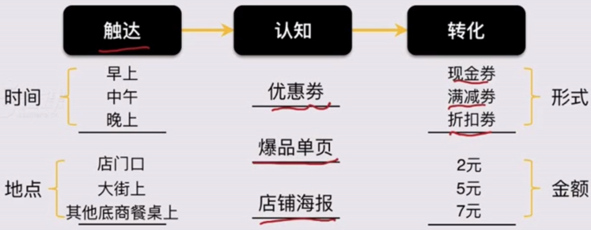
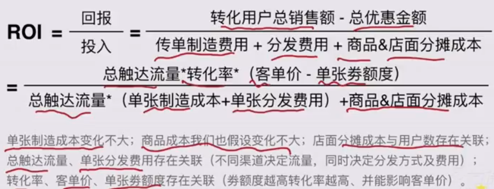
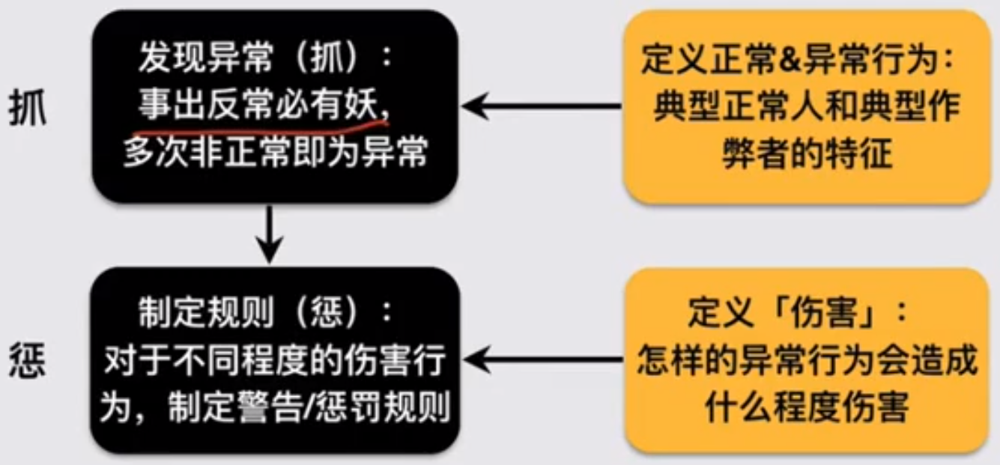
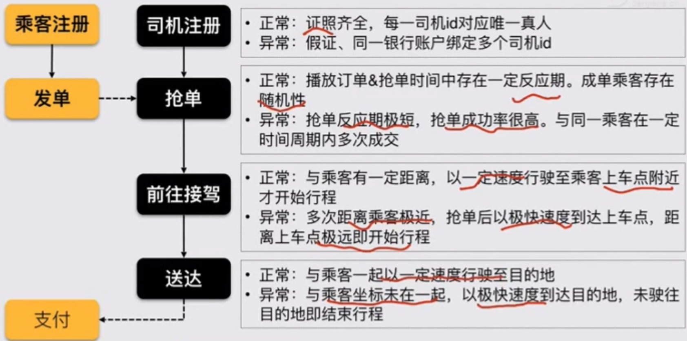
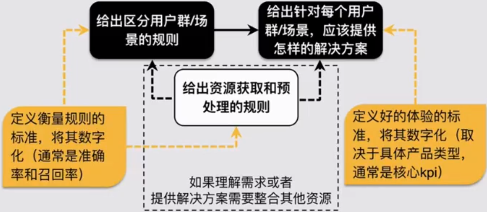
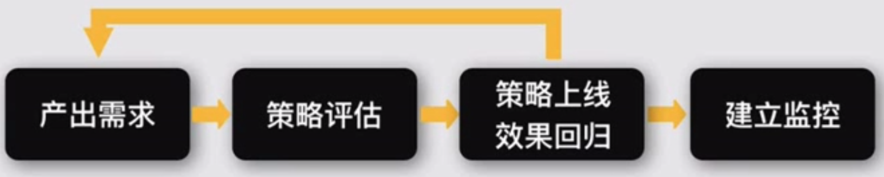
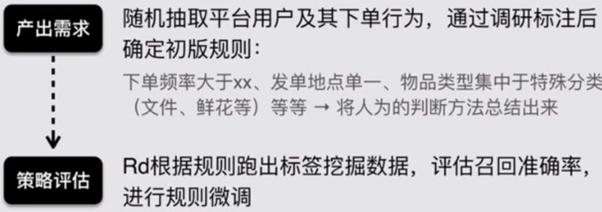
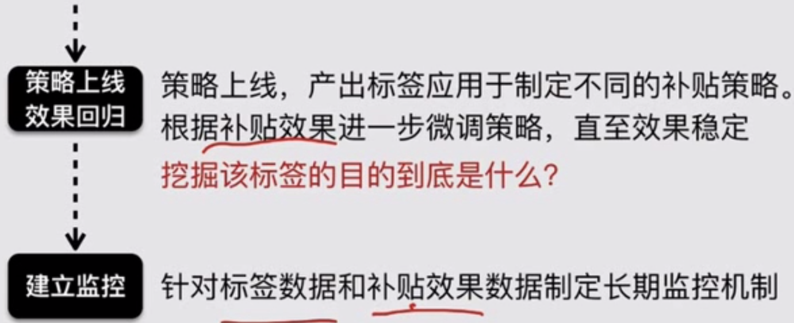

核心业务、增长、风控、数据，是策略应用的四个典型方向。凡是需要精细化解决需求的地方，都有策略存在的价值
策略在增长上的应用
定义
增长：【更有效率的杠杆】
杠杆：平台通过额外的资源（钱、流量等）投入获得更多的汇报（超出自然趋势的增长）
效率：更低成本/更快速度/更精准的定向等
实现增长的流程
触达：通过什么途径找到目标用户，所谓渠道
认知：触达后通过什么方式让用户了解，所谓产品手段/形式
转化：平台愿意付出多少成本促进用户转化，所谓补贴
效率三要素。
拉新、留存、激活都是效率二字。
触达认知转化
【如何更有效率】就是在三个要素上不断尝试迭代，寻找在整个路径上的最优方案
案例
某写字楼地下一层新开的奶茶店，想通过促销让更多人知道自己，提升销量进而提升收入

接下来，商家开始测试，如何设定促销手段使拉新效率最高（ROI最大）

策略框架
冷启动（在三个环节进行【基于调研和假设】的冷启动）
自循环（基于数据反馈，通过持续的ABtest接近理想态）
触达
定义：目标用户主要在哪里，通过什么路径目标找到用户；各渠道的用户质量如何
方法：通过技术手段将渠道持续细分；在不同渠道中确定如何圈定和识别目标用户群
认知
定义：相关的渠道可以通过什么手段影响用户（包括该渠道已经提供的方式和平台自建的方式）；该种手段对流量的利用率、转化率如何
方法：对不同渠道和手段的搭配进行持续测试；产品手段中包含内容时，针对不同用户进行更精准地内容推荐
转化
定义：需要付出多少成本才能带来转化；针对不同用户、以不同手段补贴的最低成本和转化率是多少
方法：通过持续测试，将用户不断细分、并精细化地确定撬动不同用户的最低成本是多少
案例：出行的分享红包（拉新）
产品目标
通过老用户分享红包到社交网络的方式触达新用户，实现获取新用户的目的。在不同时期，有不同的【效率】定义
衡量指标
获客成本/单均成本/转化率/拉新数量
触达
冷启动
通过老用户在平台的历史消费历史行为和其他特征判断其消费层次、兴趣倾向、价格敏感度等因素，得到渠道因素，作为【该老用户渠道】的冷启动值
自循环
根据后续的用户转化情况，持续优化对该渠道的判断（老用户的那些特征真正与用户质量挂钩，以及如何挂钩），是否作为拉新有效渠道持续投入
认知
冷启动
一老用户的消费层次和兴趣倾向为其触达用户群的冷启动值，决定红包内容
同时设定多组ABtest，用于测试其他内容的对照效果
自循环
根据不同券领取后的转化率情况不断调整内容发布，达到最佳转化率，将相关数据作为【该老用户渠道】的新标签
转化
冷启动
以老用户的价格敏感度为其触达用户群的冷启动值，决定红包类型和金额（满减or现金券，额度/折扣范围是多少）
同时设定多组ABtest，用于测试其他类型和金额的对照效果
自循环
根据不同券领取后的转化率情况不断调整类型和金额，达到转化率or ROI的最佳值，相关数据作为【该老用户渠道】的新标签
案例：外卖平台的优惠券和套餐（动销/促活）
产品目标
通过设置各类满减或折扣套餐，实现提高用户活跃、增加销售额的目的。在不同时期，有不同的【效率】定义
衡量指标
客单价/毛利率等
触达
在这个产品中渠道的概念比较弱，商家是被动的，由平台的通用渠道实现对用户的触达
认知&转化
通用动销
根据全部用户情况和其它实时性因素设定形式和金额（商家对用户没有足够了解、外部因素变化很快、小商家没有能力自己做精细化策略）
定向动销
根据单个用户的历史消费数据和兴趣倾向设定动销的产品形式和金额
例：金额满减——满减阶梯和折扣是多少，基于爆品or基本品的套餐——套餐内容和折扣是多少
两个关注点
时刻关注ROI
平均折扣比例与毛利率之间的关系
套餐/单品型的动销本身可成为拉新手段
此时平台收益并不限于销量本身
例：大卖场9毛9一斤的青菜——带动销售，麦当劳的中午套餐——拉新
案例：出行平台司机补贴的进化（促活）
产品目标
针对具体司机制定精细的补贴方案&金额，实现最小成本达到最高订单成交量的目标
衡量指标
在线时间、人均成单量、单均补贴成本等
触达
通用补贴：司机在线/抢单奖励
简单定向补贴：高峰期、夜间等时段奖励（基于订单角度）、司机任务（个性化、阶梯目标）
精准定向补贴：订单加价、动态调价
两个关注点
更宏观的ROI（LTV（用户终身价值）/CAC（用户获取成本））
成本：关注综合成本，包括【流量成本+补贴成本+补贴过程中对其他用户的伤害+促转化过程中对该用户的伤害+…】
收益：关注用户在整个生命周期中对平台的贡献，而非单次交易收益
会员的特权：作为一种特殊的促活手段，同样要关注所付出的成本有效性和是否能达到相应的收益
成本有效性：相应等级的特权/优惠是否能够吸引用户（需要10000积分，一年时间换取一个鼠标垫）
收益：达到该等级对平台贡献的贡献大小是否跟成本match（金牌会员后打折，对平台利润没有贡献了）
Aha moment：为了使新用户达到留存的aha moment，平台会做一定的资源倾向（额外流量or优先派单等），此时对其他用户造成的伤害也要考虑在成本范畴内
受目标影响的【理想态】
ABtest的结论会作为经验值，在不同的阶段性目标下，可以选取不同经验值的组合以达成不同的目标
更高利润：最求ROI最大，增长速度可能是慢的
更快增长：最求转化率最大、ROI非最优
小结
增长是一个好产品的天然属性，同时可以加入杠杆让其加速
策略框架：
触达、认知、转化三环节；
基于预测冷启动，然后将目标对象无限细分、持续测试，形成自循环，最终实现针对不同的对象群，选择最合适的杠杆将其撬动
以小博大才可成为杠杆
策略在风控上的应用
几个关键概念
风控：【最小成本】的【避免伤害】
避免伤害：包括对平台和用户的伤害
对平台的伤害（交易类平台刷补贴、互金平台各类欺诈、共享单车平台用户恶意损坏单车）
对用户（同时延伸至平台）的伤害（内容/社交平台的垃圾信息、交易类平台的恶意取消）
最小成本：大多数风控策略都会给平台/用户造成额外成本
期望给用户增加更多限制（补充更多信息才能发帖，配送员持续高频地上传位置信息）
在高风险时倾向选择更严格的策略（拒绝给高风险用户放贷，将用户阻挡在产品之外）
任何高召回的策略都存在一定概率的损伤
核心思路
降低【作弊者】的收益（滴滴取消了对司机的补贴，司机刷单作弊自然没有了）
提高【作弊者】的成本（意味着降低【作弊者】的相对收益）
案例：针对【出行平台司机刷单问题】的反作弊策略进化（提高成本）
无反作弊策略：只需在一个手机上用乘客端和司机端刷单，几乎无成本
增加了基于手机号判断的与自己刷单策略：需要一个双卡双待手机or两个手机+两张手机卡的成本
增加基于手机imei判断的策略：需要两个手机+两张手机卡
增加收付款账户判断：需要两个人的账户
增加司乘轨迹判断：需要两个真实的人，并且有真实驾驶轨迹（为收集足够数据，增加了用户成本）
增加同一司乘对多次成交判断：对于单个司机，边际收益没有了
增加了司机账户的身份证和驾驶证验证：对团伙刷单，增加了证照成本，边际收益也变得很低（为填补风控漏洞而更改产品流程，增加了用户成本）
基本流程

抓
第一步：定义正常行为（大多数人的行为表现）
- 梳理产品流程，针对每一环节的行为，定义正常用户的表现是怎样的
第二步：定义非正常行为（少数人、或人们在极端情况下的行为表现，对其他用户和平台没有伤害）
- 反向抽象非正常行为的特征，可以是单一行为、也可以是多个行为的组合特征（通常表现为数字性指标过小/大，或落于统计意义的置信区间之外）（某IP段的内容发布者在某时段内PV暴增，某配送员在距离送餐目的地1km之外点击送到）
第三步：定义异常行为（指对其他用户和平台存在伤害的行为，包括违规、作弊等不同程度）
- 进一步定义异常的召回规则，可以是单个行为的极端不正常，也可以是多个/次不正常行为的叠加（3G和4G网络条件下的正常区间不一样）
案例：外卖平台配送员的抢单行为
正常：普通人点击动作有0.3s以上的滞后
非正常：某配送员某次抢单时差为0.05s——只能认为是单次非正常
异常：连续10次平均抢单时差为0.07s——认为是显著异常、判定为使用作弊器抢单
tips
风控的基础在数据：
一定在本地收集到足够的数据
一些特定环节的风控or本身数据量不足的产品还需要整合多平台的数据以达到更好地特征抽象和召回
案例：注册环节
小平台面对大量作弊机器的识别度较低；
整合多个平台数据时，非常容易看出特征
比如对一个金融产品：
看一个用户的注册行为可能很难发现问题，但如果发现某一用户在短时间内同时在多个信贷平台进行了注册，那么其信用风险判断为高
惩
第一步：定义处罚规则
- 平台根据异常行为的恶劣程度定义不同的处罚规则（警告、奖励作废、封禁3天、永久封禁等）
第二步：及时止损
风控系统根据不同策略的准确率和时效性情况通过不同手段实现止损
在线策略：该异常可以实时召回，偏事前阻止（发帖带敏感词直接屏蔽）
离线策略：通常需要一定的时间窗口来收集数据，偏事后惩罚（一周内同一司乘对连续成单5次，之后被封禁并扣除奖励）
案例：某出行APP的风控框架（以司机侧为例）

小结
策略框架：抓和惩两个环节
抓：定义某类目标用户/行为，通过收集足够丰富的数据，实现准确地定向挖掘
惩：及时止损
【满足用户需求】的反向过程：
在每个环节设置障碍，使【用户】无法顺畅得到满足——提高作弊成本甚至直接打消用户来平台满足需求的想法——降低作弊收益
策略在数据上的应用
【应用驱动】
支持核心业务：比如搜索推荐的对象。考虑覆盖率、时效性、可用性等
支持增长：比如用户分层、兴趣标签。考虑覆盖率、准确率等
支持风控：比如行为数据、设备数据。考虑覆盖率、可用性等
数据是一些策略的基础
数据
基础数据
对客观事实的收集和整理，网页、地图、商品等
更全的覆盖
更及时的更新
多个数据源之间的合并去重
各个字段之间的结构化
画像标签
对基础数据进行的深加工
基于基础数据和行为去挖掘挖掘用户性别、兴趣、购买力、履约能力、活跃程度等维度的特征
内容等资源的标签和分类
策略框架

数据是资源的子集
基本流程

案例：配送服务平台的商家用户标签
产品目的
挖掘平台上的商家用户，区分补贴策略
衡量指标
商家标签的召回率和准确率


小结
策略是解决问题的手段
问题驱动：寻找问题没有被很好解决的部分，以此驱动优化策略
目标导向：从简单规则到复杂系统，解决掉问题便是好策略
核心业务、增长、风控、数据，是策略应用的四个典型方向。凡是需要精细化解决需求的地方，都有策略存在的价值